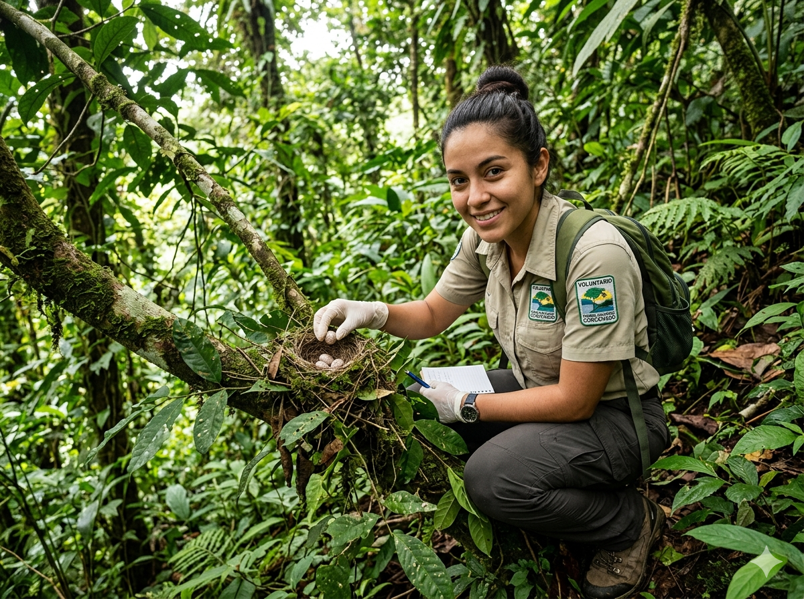

Live your Dream of Conservation
Become a vital part of the Corcovado Foundation through our immersive Biohostel volunteering programs. Work alongside biologists, protect endangered species, and leave a tangible mark on one of the most biodiverse places on Earth.
The Destination: The Osa Peninsula
Nature’s Final Frontier. A place where the rainforest meets the sea, hosting 2.5% of the world’s biodiversity. Your journey into the wild starts here.
Corcovado National Park is one of the most biologically intense places on Earth. You'll work in pristine environments, far from the crowds.
Live in El Progreso de Drake or Punta Mala. Connect with local families, share meals, and understand the real challenges of conservation.
Your work directly supports our 4 core programs: Sea Turtles, Ecosystem Restoration, Environmental Education, and National Park Support.
How do you want to experience Corcovado?
We offer three distinct volunteering pathways designed to match your goals, availability, and experience level.
Individual
Deep dive into daily conservation work and community life. Perfect for solo travelers seeking authentic field experience. Minimum stay: 2 weeks.
Apply as Individual →Companies & Universities
Immersive learning environment for schools, universities, and corporate teams. Build cohesion while making a meaningful, measurable impact.
Request Group Info →Internships
Long-term commitment for students and professionals seeking hands-on experience in conservation biology, education, or community development.
Apply for Internship →Program Details & Logistics
Transparency is key. Here is exactly what to expect, what is required, and how much it costs.
Sea Turtle Conservation
Season: July 1st – December 15th (Start dates: Tuesdays)
Location: Playa Hermosa – Punta Mala Wildlife Refuge
Cost: $315 USD per week. Covers accommodation, 3 meals/day, and training.
Requirements: 18+ years old, basic Spanish/English, good physical condition, travel insurance. Able to work 4-6 hours/day in extreme weather.
Ecosystem Restoration & Community
Season: Year-round (Jan 15 – Dec 15). Start dates: Mon-Thu.
Location: El Progreso de Drake, Osa Peninsula
Cost: $175 USD per week. Covers accommodation, 3 meals/day, and training.
Requirements: 16+ years old, intermediate Spanish, good physical condition, travel insurance. 5 hours/day, 5 days/week.
What to expect
Free time: 2 days off per week. Explore virgin beaches, surf, or relax at the Biohostel.
Connectivity: Electricity and mobile reception available, but limited. No ATMs nearby—bring cash for tours/snacks.
Payment: Must be made before arrival via our secure link. First 2 weeks are non-refundable.
Stories from our Volunteers
"A life-changing experience"
"Getting here was a dream. Seeing the turtles reach the ocean for the first time changed how I see the world."
— Sarah M., Sea Turtle Volunteer
"More than I expected"
"I came for two weeks and left with a new purpose. Teaching the local children showed me the real impact one person can have."
— Marco R., Education Volunteer
"Nature's classroom"
"Planting trees in the morning and learning about the ecosystem in the afternoon. Every day was a new adventure."
— Elena K., Intern
Start your application
Tell us about yourself. We'll get back to you within 48 hours with next steps, available dates, and program details.
What happens next?
- Our team reviews your profile within 48 hours.
- We confirm program availability for your dates.
- You receive details on costs, accommodation, and logistics.
- Once payment is confirmed, you get the Volunteer Orientation Manual.
Please send a copy of your passport and travel insurance policy to zoraida@corcovadofoundation.org at least 2 weeks before arrival.
Ready to make a difference?
Your adventure in conservation starts here. Whether you volunteer, donate, or partner with us, every contribution protects one of Earth's most precious ecosystems.